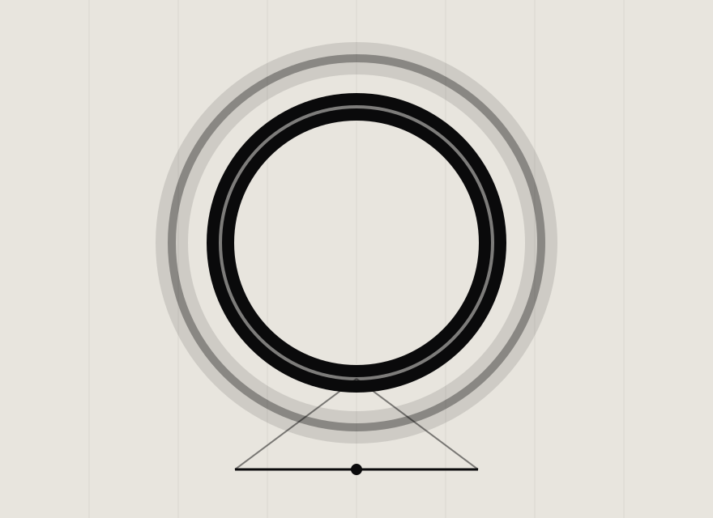
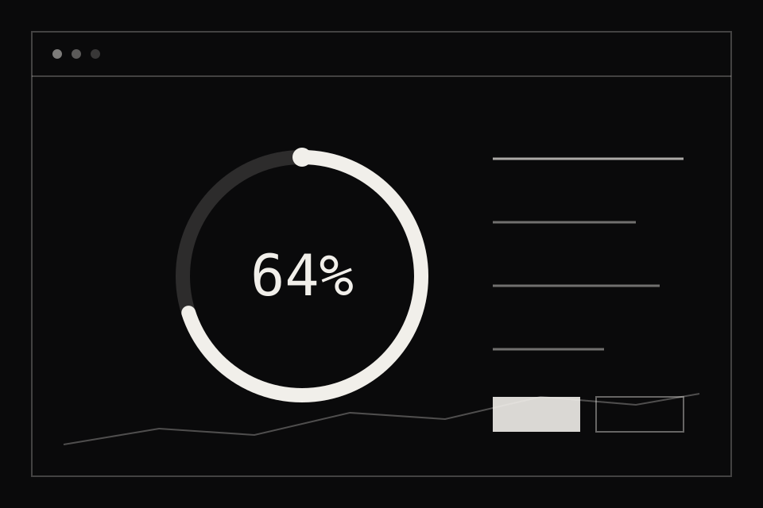

LUMEN KEYNOTE · 2026
新一代环境光引擎发布会 · 2026 年 9 月 16 日 · 线上直播
01 · PROBLEM
78%
的用户承认，夜间使用手机后感到明显的眼部干涩与疲劳
2.4×
过去五年，人均夜间屏幕时长增长了两倍有余
0
主流设备中，真正做到随环境无级调光的数量
02 · INSIGHT
光不该争夺注意力，
它应该照顾人。
这是 Lumen 2.0 全部的设计原点——从"更亮"，转向"更懂你"。
03 · PERFORMANCE
0.3ms
光线响应延迟
环境变化到亮度调整完成，快过一次眨眼
4096
级亮度调节
无级过渡，眼睛永远察觉不到跳变
-62%
夜间蓝光输出
日落后自动切换暖光谱，不打扰褪黑素分泌
我们不制造更亮的屏幕，
我们制造更舒服的夜晚。
04 · BEFORE / AFTER
BEFORE · LUMEN 1.0
手动调节，亮度永远慢半拍
深夜解锁瞬间，冷白光直射双眼
色温固定，与房间灯光格格不入
AFTER · LUMEN 2.0
环境光引擎全自动，0.3ms 跟随变化
夜间模式渐入渐出，亮度从 1nit 起步
色温随日落同步偏移，像房间里的一扇窗
05 · DESIGN
环形光源以 15° 倾角向下投射，光线先碰到桌面，再温柔地漫回你的视野——没有任何一个角度直视灯珠。
整灯一体成型，无螺丝、无接缝，摆在哪里都像一件静物。

06 · INTERFACE

打开 App，看到的不是按钮，而是此刻房间里的光。
一个圆环，一次拖动，所有的自动化都在后台安静运行。
07 · ROADMAP
2026 Q4
Lumen 2.0 发售
桌面版首发，覆盖三大平台
2027 Q2
Lumen Home
从一张书桌，扩展到整个房间
2028 Q1
开放光谱协议
让每一盏灯都学会克制
LUMEN KEYNOTE · END
今晚 24:00 开启预售 · 让光重新学会克制